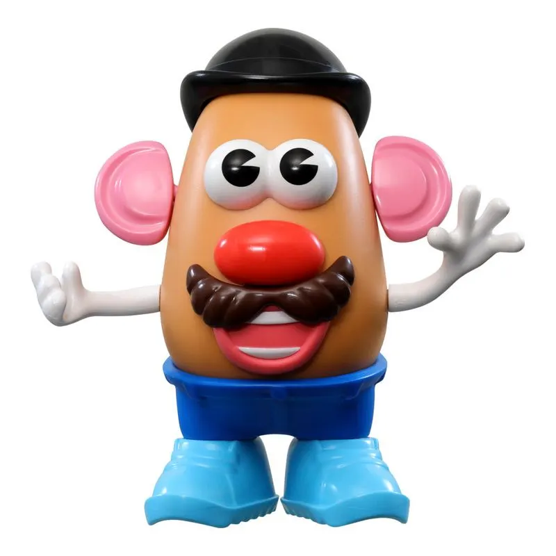

A revolta das Batatas
VIVA AS BATATAS!!!
Certo as batatas cansaram de rolar e decidiram se revoltar contra a sociedade dos humanos, então elas se reuniram e formaram um esquadrão BTT para reinvindicarem sua indepencia e condições melhores condições de vida. E assim começa a historia da revolta das batatas, fique ligado nos proximos capitulos.
